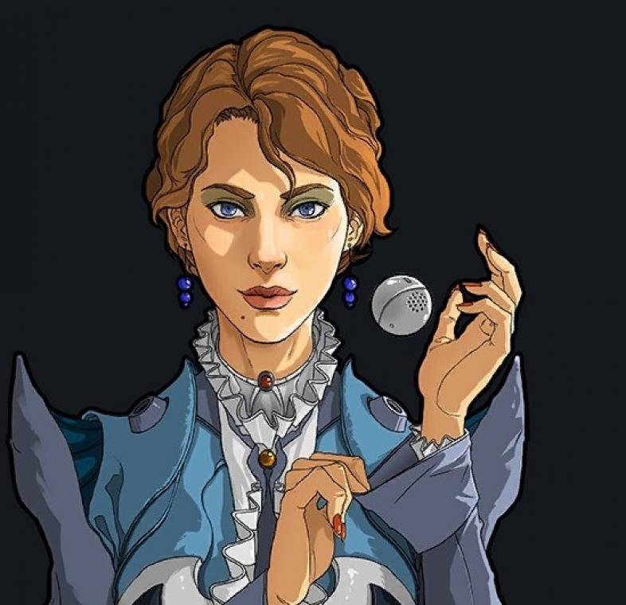

pierwsze pytanie kim lub czym są pisarze si ? Pisarze si to pisarze ustalający co się stanie w twojej rozgrywce czy przyjdzie karawana czy zatakują ciebie piraci. Pisarze mówią jak często i co się stanie (zależnie od twojego dobytku)
Klasyczna Kasandra
Jest to podstawowa pisarka ,która wysyła często mniejsze ataki.
Czasami na wyższym poziomie trudności w dlaszej części gry wysyła za dużo ataków

Przyjazna Phoebe
Ta pisarka rzadko daje ci wyzwanie ale atakuje z większą siłą , szczególnie jej ataki bolą w dalszej części gry.
Polecam ją na start albo dla miłej gry
Losowy Randy
Jest absolutnie nie przewidywalny może nie atakować ciebie dłużej niż Phoebe lub zaatakować ciebie pary razy na raz.
Polecam dla specjalistów do absolutnie nieprzewidywalnej gry (jak w życiu)